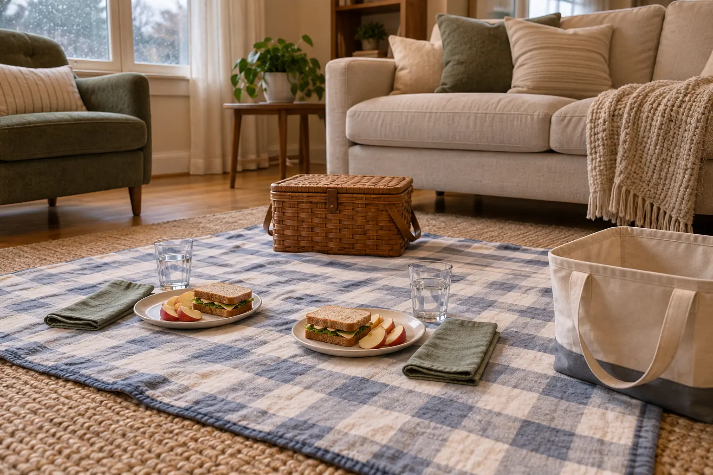

0–10: setup
Move only what blocks a clear floor area. Spread one washable blanket. Put a towel under drinks. Place the empty cleanup tote at the blanket's edge.
AT HOME · AGES 5–12 · 30 MINUTES · NO SHOPPING
The novelty is eating on the floor, not manufacturing a theme. Use one blanket, food already in the house and one tote that carries every dish back to the kitchen.

A living-room picnic rescues an ordinary evening without creating an activity hangover. There is no craft, shopping list, printable menu or pretend campfire. The floor changes the setting enough for school-age kids; the one-blanket boundary prevents crumbs from becoming a whole-room search.
Budget 10 minutes to set up, 15 minutes to eat and talk, and five minutes to reset. If dinner needs longer, keep the same boundary and cleanup system but stop calling the schedule exact. The point is a low-friction family shift, not a race.
Regular meal, different floor: move tonight's normal sandwiches, leftovers or snack plate to the blanket. This is the default. Color picnic: each person finds two foods of different colors already available. Do not turn this into nutrition theater or a grocery emergency. Weather picnic: listen to rain at the window, name three things the weather changed and eat. No fake tent required.
Use plates rather than setting food directly on the blanket. Choose stable cups with modest amounts of water. Avoid candles, sharp serving tools, hot pans and drinks hot enough to burn. Keep cords, space heaters and floor lamps out of the picnic zone.
Build each plate from what the household already uses: one familiar main, one produce or shelf-stable side if available, and water. A sandwich with apple slices works. So do leftovers served on plates, crackers with cheese and fruit, or a familiar allergy-safe alternative. There is no required menu.
Do not introduce a food challenge merely because the setting is playful. Follow the family's established allergy and choking-safety plan. Seat children upright while eating, cut food appropriately for the child's abilities and supervise. Keep pets away from the blanket so they do not grab food or create guarding and spill problems.
USDA food-safety guidance says perishable food should not remain at room temperature for more than two hours, or one hour above 90°F. A 30-minute indoor picnic is comfortably inside that window, but the rule is not permission to leave leftovers on the floor afterward. Refrigerate promptly and discard food when time or temperature safety is uncertain.
An adult still owns safety, food handling and the final kitchen reset. Jobs are participation, not a way to blame a child when water spills.
Use one question, then let the meal breathe: “What was one part of today you would keep?” “What should tomorrow have less of?” or “If this room became an outdoor place, where would it be?” Skip the round-robin demand. Anyone may pass. The changed setting is already doing the work.
If children want a tiny extension, have each person draw one item that belongs in an imaginary picnic location. Stop after five minutes. Do not add paint, glue or supplies that defeat the cleanup rule.
A floor picnic is not accessible or comfortable for everyone. Use the same blanket as a tablecloth on an ordinary table when kneeling, transfers, balance, pain or mobility make the floor a bad choice. A tray on a couch can work when it is stable and safe for the individual. The family experience comes from changing the setting and using one cleanup boundary, not from proving everyone can sit cross-legged.
For sensory needs, keep the regular plate, utensils and lighting. Skip background music. Let a child sit at the blanket edge or at the table while remaining part of the conversation. If crumbs or mixed foods are distressing, use separate plates and a familiar placemat.
Child refuses the floor: move their plate to the table without turning it into a showdown. Drink spills: blot with the towel already under the cups, move that cup to the table and continue. Arguments start: remove jobs, finish the familiar food and close the plan early. Adult is depleted: use packaged or cold familiar food and skip the conversation prompt. No clean blanket: use a washable tablecloth, towels or the kitchen table.
For another low-energy evening, use the 45-minute library-night plan. For a five-minute planning reset, use the family calendar reset. For a simple indoor experiment when energy is higher, use the flashlight shadow lab.
Do not buy a picnic basket, themed dishes, floor cushions or decorations for this plan. Do not order restaurant food just to make the event count. If the household already owns a washable blanket, plates, cups and a tote or laundry basket, the complete equipment list is done.
The setup in the hero image is conceptual, not a shopping list. A plain towel and ordinary plates work better than fragile aesthetic objects. “No shopping” is a design constraint that protects the evening from becoming another errand.
Skip the floor version when mobility, pain, food guarding by pets, crawling siblings, choking risk or household layout makes it unsafe. Use the table version instead. Skip the entire novelty when a child needs the predictability of the regular meal location after a hard day. A calm ordinary dinner is already a win.
MAKE THE DAY COUNT
Build the plan your family can finish well, then leave enough energy for the next part of the day.
More family plans